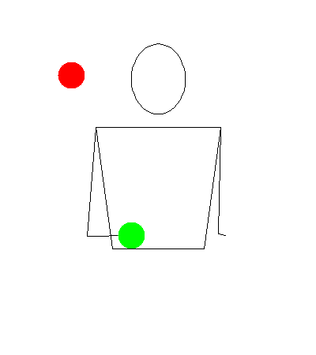
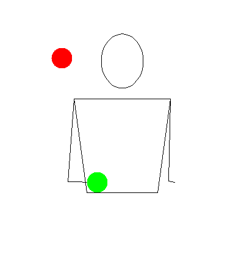

Two in One Hand

Description
Juggling 2 balls in one hand is the smallest about of balls a trick can have. It is one of the simplest tricks.
Tutorial
There are two ways to do this trick.
Circular
For this, you throw in a circular pattern so the balls do not hit each other. You can make it go either clockwise or counterclockwise.
Columns
For this, you throw each ball straight up. These form columns and each ball gets a side.
Tips
You will definately want to learn this on both sides.